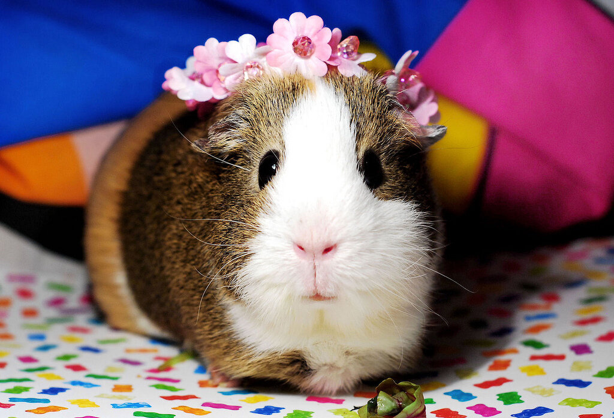
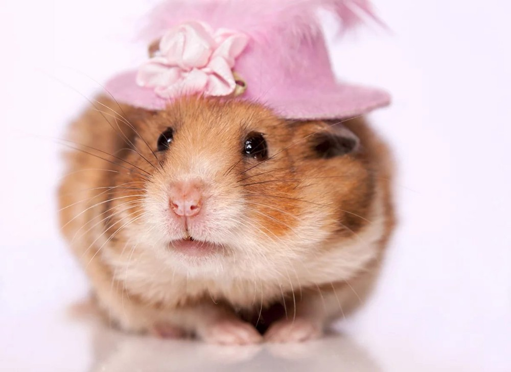
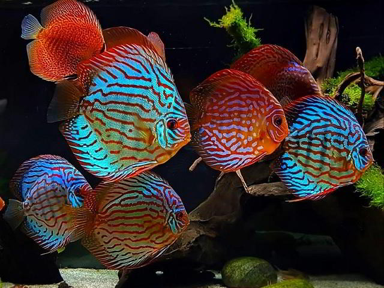
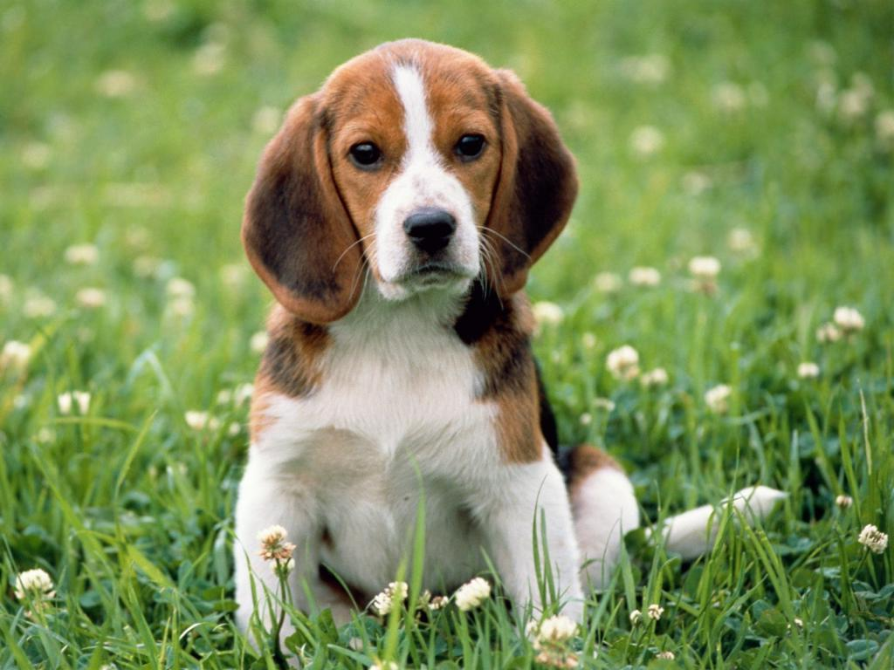
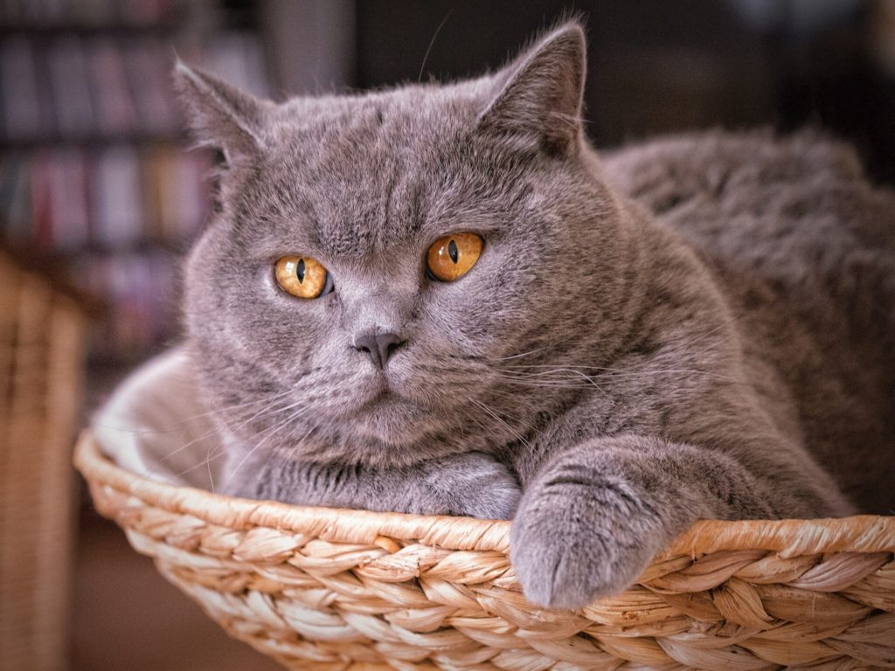

5 место: Морская свинка
. 4 место: Хомяк
. 3 место: Аквариумные рыбки
. 2 место: Собака
. 1 место: Кошка
. | Породы | Собак | Кошек | Морских свинок |
|---|---|---|---|
| Самая популярная | Йоркширский терьер | Экзотическая короткошёрстная | Абиссинская | Происхождение | Англия | США | Южная Америка |